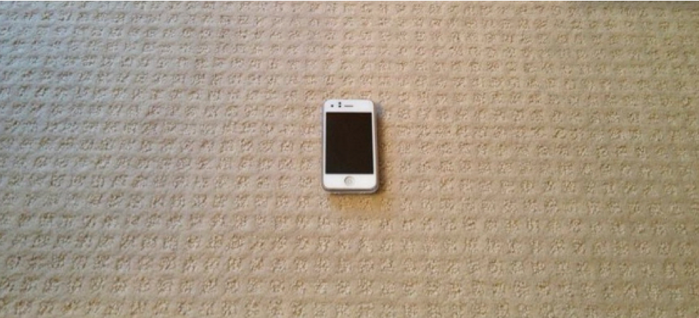

1993:
2013:

If Raymond Kurzweil’s predictions are accurate (and they probably are), in about 10 years, individuals with brain dysfunction will have a number of options to help improve their everyday cognitive functioning. Ramez Naam provides a glimpse into what is already being done to intermingle computer technology and neurology.
In the meantime, we currently have excellent technology, in the form of apps and mobile devices. How can patients with cognitive impairment benefit from this ubiquitous technology? Surprisingly, there are not many well-designed studies to help answer this question. There is, however, an excellent systematic review of the assistive technologies for cognition (ATC) literature. In this paper, Gillespie et al. propose a framework that will likely remain applicable even if technology changes drastically. Their framework does not emphasize specific technologies (like an alarm clock or pager). Rather, they highlight potential relationships between psychological domains and various types of functions that could be supported by various technologies. For instance, those with planning and organization deficits may benefit from technology that provides micro-prompting. The technology could be a mobile phone, a watch, or Google Glass. The bottom line is technology will certainly be much different in 10 years, but the functions that require support will not likely change.
If you are planning research in this area or thinking about developing a clinical intervention using mobile technologies, this paper is a must read.